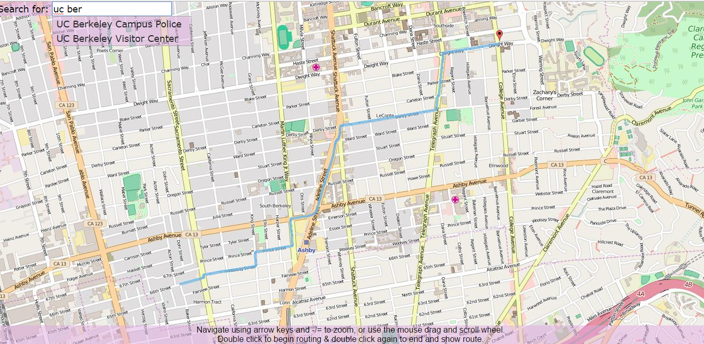

|
BearMaps is a fully functional mapping application of UC Berkeley and its surrounding area.
A special QuadTree and Trie data structure was utilized to raster and render an accurate map of Berkeley.
Functionality includes routing to and from locations, searching for locations, and freely moving around the map with zooming capabilities.
To the right is a screenshot of a portion of the map and its capabilities.
|

|